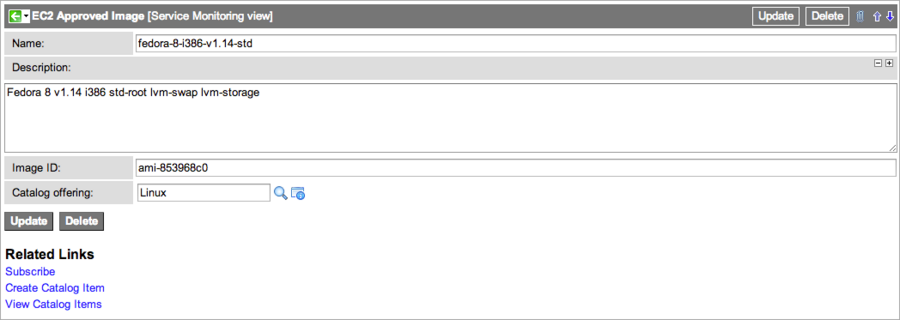

Amazon EC2 Approvals and Provisioning for Cloud Provisioning
Contents
1 Overview
Use these procedures to make Amazon EC2 images available for provisioning from the service catalog. Images are not available until all Amazon and ServiceNow account configuration is complete. Two separate approvals are required before an EC2 instance is available for provisioning:
- Approval by the cloud administrator for the image to be available to users in the service catalog.
- Approval by an EC2 approver of a user request for an instance.
If the user request is approved, members of the provisioning group create the instance. When the virtual machine is provisioned, ServiceNow automatically creates a new asset in Asset Management. This new asset appears in the requester's My Assets portal.
2 Task 1: Approve Available Images
After you establish the Amazon EC2 account (http://aws.amazon.com/ec2/ ) and configure Amazon Web Services in ServiceNow, retrieve the list of available images and approve them for the service catalog offering. In this task, the administrator decides which images are available for selection in the specific regions defined by Amazon. Only approved images are available to fill requests from the service catalog.
- Navigate to Amazon Web Services > Instances > Available Images.
- Select an image from the list and review its configuration.
- Click Approve.
- The image is not yet available to users and must be configured as a service catalog offering by the cloud administrator.
3 Task 2: Set up the Service Catalog Offering
The administrator must link the approved images to the operating systems offered to users in the service catalog.
- Navigate to Amazon Web Services > Service Catalog > Offerings and click New.
- In the Offering field of the Catalog EC2 OS Selection form, enter the operating system as it should appear to users.
- Click Submit.
- Create a separate record for each operating system offered.
- Navigate to Amazon WebServices > Service Catalog > Sizes and click New.
- Enter a descriptive Name that conveys the size of the image, and enter the value of the corresponding Amazon EC2 size in the API field.
- For example, a High-Memory Double Extra Large virtual machine uses an API value of m2.2xlarge. See Size Definitions for a list of Amazon EC2 size values.
- Click Submit.
- Navigate to Amazon Web Services > Instances > Approved Images.
- Select an image from the list.
- Select an operating system in the Catalog offering field to link with this image and click Submit.
- This is the name that is presented to users requesting an EC2 instance from the service catalog.
- 
{kind=link}
4 Task 3: Approve and Provision the Request
The following user groups control the approval and provisioning of requests. Ensure that users are assigned to these groups before offering Amazon EC2 instances in the service catalog. See Creating Users and Associating to a Group for instructions.
- EC2 Approvers: approve all instances requested through the service catalog for provisioning.
- EC2 Operators: select the Amazon EC2 account, region, and image to fulfill approved requests from the service catalog.
4.1 Approval
Requests for virtual machines in the base system can be approved or rejected by members in either of the following approval groups:
- EC2 Approvers
- Virtual Provisioning Cloud Administrators
Approvers pick up their tasks in Service Desk > My Approvals. Only one member of either approval group is required to approve a request. The approver opens the request and clicks Approved or Rejected.
| |
Note: If the approver rejects the request, the process is finished, and no instance is provisioned. The system notifies the user that the request was rejected. |
{kind=link}
4.2 Provisioning
Approved requests appear in the Service Desk > My Groups Work queue for the members of the EC2 Operators group.
- Open the task and select the Amazon Web Services account from which to provision the requested instance.
- In Region settings, select a region for the instance (an Amazon EC2 datacenter).
- Available regions are those selected during the Amazon EC2 configuration. A choice list of available images is added to the form for this task. This list is filtered to show:
- Images in the region selected for the account
- Images that match the OS requested
- Images in the size requested
- Enter a user-friendly name for this instance in the Instance name field. (Dublin)
- ServiceNow uses this name to identify the instance in the My Virtual Assets portal and in the CMDB. Amazon uses this name as the Name Tag in the EC2 instance list. If you request more than one instance, ServiceNow adds a unique number to the specified name for each instance. For example, three instances requested with the name TestLab become TestLab1, TestLab2, and TestLab3. If the Instance name field is blank, the instance is identified by a machine generated string created by Amazon. This field is available with the Dublin release.
- Select an Image to provision and click Close Task to launch the provisioning workflow that creates the EC2 instance.
- When the workflow has finished provisioning the instance, the requester receives an email containing the instance ID, IP address, and the public DNS for the instances created. If provisioning fails, the workflow notifies the provisioning group by email.
{kind=link}
5 Task 4: Configure the Lease Duration
The default setting for a lease period and the maximum allowed duration of a virtual server lease are controlled by the following properties found in Cloud Provisioning > Management > Properties. For instructions on how to configure lease start and end times for individual virtual machines, see Requesting an Instance.
- Default lease duration: This property (glide.vm.lease_duration) controls the length of the lease period automatically configured for a virtual server request. The default duration is 60 days from the lease start time, which begins on the current date and time of the request. The actual time of the lease is calculated from the time the instance is provisioned, after any approvals.
- Max lease duration: This property (glide.vm.max_lease_duration) controls the maximum length of the lease period permitted for a virtual server. The default maximum duration is 90 days from the lease start time. This property prevents virtual resources that have been ignored from running indefinitely.
| |
Note: ServiceNow applies the same values to both Amazon EC2 and VMware lease durations. |
{kind=link}
5.1 Grace Period
A configurable grace period enables an administrator to delay the termination of a virtual machine when the lease end date expires. When the lease ends, the virtual machine is powered off, but is available for use until the end of the grace period. To change the default grace period of 7 days, navigate to Cloud Provisioning > Management > Properties and edit the value in the Grace period after lease end until VM termination property (glide.vm.grace_period).
When the lease ends, the platform runs the Amazon EC2 End of Lease workflow, which powers off the virtual machine and notifies the requester that the lease has expired. The Amazon EC2 End of Lease workflow evaluates the glide.vm.grace_period property to determine when the Terminate Amazon EC2 Instance workflow should run. The requester is notified when the virtual machine is terminated (or when termination has failed).
To configure a different workflow to run when a lease is terminated.
- In the application navigation filter, enter task_action_workflow.list.
- Select the end_of_lease action for the EC2 Virtual Machine Instance [cmdb_ci_ec2_instance] table.
- Select a different workflow to run in the Workflow field.
- Click Update.
{kind=link}
6 Discovering Existing EC2 Instances
- Navigate to Amazon Web Services > Configuration > Account and select the account for the instances you want to discover.
- Under Related Links, click Create Discovery Schedule.
- The Discovery Schedule page is displayed.
- Under Related Links, click Discover Now.
- After Discovery has completed, all discovered Amazon resources will be displayed on the account page.
7 Terminating an EC2 Instance
You can the request termination of an EC2 instance at any time during its lease from the My Virtual Assets portal in the service catalog. A cloud administrator can configure the system to generate a change request automatically when a user requests the early termination of a virtual machine. When an instance reaches the end of its lease (or its grace period), cloud provisioning terminates the virtual machine automatically and notifies the user.
Contents > Deliver > IT Operations Management > Cloud Provisioning > Amazon EC2 for Cloud Provisioning